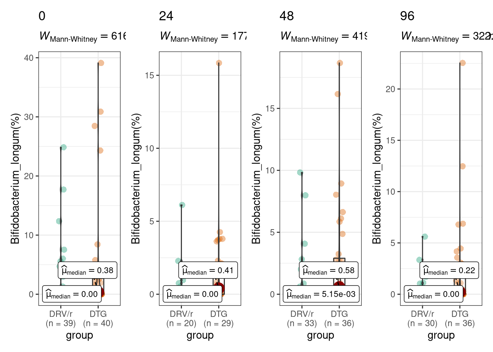

Taxonomy: Differential Abundance
Carlos Blázquez Bondia
3/23/2022
Last updated: 2022-05-04
Checks: 6 1
Knit directory: advanz4/
This reproducible R Markdown analysis was created with workflowr (version 1.7.0). The Checks tab describes the reproducibility checks that were applied when the results were created. The Past versions tab lists the development history.
The R Markdown file has unstaged changes. To know which version of the R Markdown file created these results, you’ll want to first commit it to the Git repo. If you’re still working on the analysis, you can ignore this warning. When you’re finished, you can run wflow_publish to commit the R Markdown file and build the HTML.
Great job! The global environment was empty. Objects defined in the global environment can affect the analysis in your R Markdown file in unknown ways. For reproduciblity it’s best to always run the code in an empty environment.
The command set.seed(20211203) was run prior to running the code in the R Markdown file. Setting a seed ensures that any results that rely on randomness, e.g. subsampling or permutations, are reproducible.
Great job! Recording the operating system, R version, and package versions is critical for reproducibility.
Nice! There were no cached chunks for this analysis, so you can be confident that you successfully produced the results during this run.
Great job! Using relative paths to the files within your workflowr project makes it easier to run your code on other machines.
Great! You are using Git for version control. Tracking code development and connecting the code version to the results is critical for reproducibility.
The results in this page were generated with repository version f51189b. See the Past versions tab to see a history of the changes made to the R Markdown and HTML files.
Note that you need to be careful to ensure that all relevant files for the analysis have been committed to Git prior to generating the results (you can use wflow_publish or wflow_git_commit). workflowr only checks the R Markdown file, but you know if there are other scripts or data files that it depends on. Below is the status of the Git repository when the results were generated:
Ignored files:
Ignored: .RData
Ignored: .Rhistory
Ignored: .Rproj.user/
Ignored: analysis/.Rhistory
Ignored: data/mre.rds
Unstaged changes:
Modified: analysis/420_Taxonomy_DA.Rmd
Note that any generated files, e.g. HTML, png, CSS, etc., are not included in this status report because it is ok for generated content to have uncommitted changes.
These are the previous versions of the repository in which changes were made to the R Markdown (analysis/420_Taxonomy_DA.Rmd) and HTML (docs/420_Taxonomy_DA.html) files. If you’ve configured a remote Git repository (see ?wflow_git_remote), click on the hyperlinks in the table below to view the files as they were in that past version.
| File | Version | Author | Date | Message |
|---|---|---|---|---|
| Rmd | f51189b | cblazquez | 2022-04-29 | started longitudinal DA section |
| Rmd | 961b1ec | cblazquez | 2022-04-29 | Added Venn diagram and plotted stats of spps with DA in all TPs (Differential Abundance) |
| html | 961b1ec | cblazquez | 2022-04-29 | Added Venn diagram and plotted stats of spps with DA in all TPs (Differential Abundance) |
| Rmd | 74908f2 | Marc Noguera-Julian | 2022-04-28 | Update 420_Taxonomy_DA.Rmd |
| Rmd | a989956 | Marc Noguera-Julian | 2022-04-28 | Update 420_Taxonomy_DA.Rmd |
| Rmd | 3f2dedb | Marc Noguera-Julian | 2022-04-28 | Update 420_Taxonomy_DA.Rmd |
| Rmd | 0ad10f5 | Marc Noguera-Julian | 2022-04-28 | Update 420_Taxonomy_DA.Rmd |
| Rmd | a143db0 | cblazquez | 2022-04-28 | Advanced on longitudinal DA |
| html | a143db0 | cblazquez | 2022-04-28 | Advanced on longitudinal DA |
| html | c20090b | cblazquez | 2022-04-01 | Compiled taxa ranking html + several bug fixes |
| Rmd | 5917250 | Marc Noguera-Julian | 2022-03-31 | Update 420_Taxonomy_DA.Rmd |
| html | e253850 | cblazquez | 2022-03-29 | worked on NMDS |
| Rmd | c51687a | cblazquez | 2022-03-28 | fixed workflowrs and gene richness issues |
| html | c51687a | cblazquez | 2022-03-28 | fixed workflowrs and gene richness issues |
| Rmd | 11c1e7d | cblazquez | 2022-03-28 | Code reorganized towards new structure |
Data import and exploration
This section should explain anyithing that may have happened during the first fase of importing and formatting data, such as any modification or additional filtering step.
# mymre <- here::here("data","mre.rds") %>%
# readRDS(.)
mymre <- aws.s3::s3readRDS(bucket = "s3://mistral-wp6-advanz4", object = "metagenome/WMGS/MREObject.rds")
# metadata <-get_meta(mymre)
metadata <- here::here("Metadata", "2022_04_28_clean_metadata_LIMS.csv") %>%
read.csv() %>%
column_to_rownames("SampleID") %>%
mutate(SampleID = rownames(.))
cat_df <-
here::here("Metadata", "CategoricalVariables.txt") %>%
read.delim(., header = T)
cat_vector <- cat_df %>%
pull(CategoricalVariable)
long_var <- here::here("Metadata", "LongitudinalVariables.txt") %>%
read.delim(., header = T) %>%
pull(LongitudinalVariable)
link_var <- here::here("Metadata", "LongitudinalVariables.txt") %>%
read.delim(., header = T) %>%
pull(LinkVariable)
num_var <- here::here("Metadata", "NumericalVariables.txt") %>%
read.delim(., header = T) %>%
pull(NumericalVariable)#### This chunk is for updating the mre internally as new variables come out. Once the final mre is done this chunk will be removed.
devtools::load_all(here::here("../WMGSPipeline"))suggested package selbal ✔suggested package DataExplorer ✔suggested package lme4 ✔suggested package merTools ✔mymre <- filter_samples(mre = mymre, sample_ids = metadata$SampleID)
mymre@metadata@metadata_df <- as.tibble(metadata)
mymre@taxa@metaphlan@phyloseq@sam_data <- metadata %>%
phyloseq::sample_data(.)
mymre@taxa@metaphlan@phyloseq_sec@sam_data <- metadata %>%
phyloseq::sample_data(.)
mymre@metadata@categorical_vals <- here::here("Metadata", "CategoricalVariables.txt") %>%
read.delim(., header = T) %>%
tibble()
mymre@metadata@numeric_vals <- here::here("Metadata", "NumericalVariables.txt") %>%
read.delim(., header = T) %>%
tibble()
mymre@metadata@longitudinal_vals <- here::here("Metadata", "LongitudinalVariables.txt") %>%
read.delim(., header = T) %>%
tibble()# Any homebrew support function that may be written will be placed hereFirst we’ll start with a non-compositional approach which may provide potential candidate taxa for DA to be confirmed with more astringent and specific compositional approaches.
Non-compositional analysis
In this case, we’ll test for group as categorical variables. We may extend the analysis towards other cat_vars, but those were more important for basal comparisons, which already shown no great differences were found among other potential confusor variables.
Cross-group Differential Abundance
These comparisons will be between treatment groups at the same time point: one at week 0, week 48 and 96.
phy <- get_phyloseq(mymre, type = "metaphlan") %>%
phyloseq::filter_taxa(., function(x) sum(x > 0) > (0.3*length(x)), TRUE)
otu_df <-
phyloseq::otu_table(phy) %>%
t() %>%
as.data.frame() %>%
stats::setNames(phyloseq::tax_table(phy)[,"Species"]) %>%
tibble::rownames_to_column("SampleID") %>%
stats::setNames(.,stringr::str_remove_all(colnames(.), "\\[")) %>%
stats::setNames(.,stringr::str_remove_all(colnames(.), "\\]"))
stat_list <-
cat_vector %>%
purrr::set_names() %>%
purrr::map(function(cv) {
c(0,24,48,96) %>%
set_names() %>%
purrr::map_dfr(function(tp){
otu_df %>%
dplyr::select(-SampleID) %>%
colnames() %>%
purrr::set_names() %>%
purrr::map_dfr(function(sp) {
df <-
otu_df %>%
dplyr::select(SampleID, !!sym(sp)) %>%
dplyr::left_join(metadata[, c("SampleID", link_var, cv, long_var), drop = F],
by = "SampleID") %>%
dplyr::filter(!!sym(long_var) %in% tp)
if (length(unique(dplyr::pull(.data = df, !!sym(cv)))) == 2) {
test <- df %>%
rstatix::wilcox_test(., formula(paste(sp, "~", cv)), paired = F) %>%
dplyr::mutate(method = "Wilcoxon")
} else{
test <- df %>%
rstatix::kruskal_test(., formula(paste(sp, "~", cv))) %>%
dplyr::mutate(method = "Kruskal-Wallis")
}
}) %>%
rename(species = .y.) %>%
dplyr::mutate(long_var = tp) %>%
group_by(long_var) %>%
mutate(p.adj = p.adjust(p, "BH")) %>%
# filter(p.adj < .05 ) %>%
group_by(species)
})
})
DAsp <- stat_list$group %>%
filter(p<0.05) %>%
group_by(species)
## --- init MNJ
## It is interesting that Bifidobacterium species (adolescentis, longum) are consistently found as DA in all (most) timepoints
## Produce a table showing
stat_list$group %>%
filter(p<0.05) %>%
group_by(species) %>%
tally() %>%
filter(n>=2) ## Species being significant (Wilcoxon unadjusted <0.05)# A tibble: 15 × 2
species n
<chr> <int>
1 Bifidobacterium_adolescentis 3
2 Bifidobacterium_longum 3
3 Clostridium_citroniae 2
4 Coprococcus_catus 2
5 Eubacterium_eligens 2
6 Eubacterium_siraeum 2
7 Eubacterium_sp_CAG_180 2
8 Firmicutes_bacterium_CAG_110 2
9 Flavonifractor_plautii 2
10 Lachnospira_pectinoschiza 2
11 Olsenella_scatoligenes 3
12 Oscillibacter_sp_CAG_241 2
13 Parabacteroides_distasonis 2
14 Roseburia_faecis 2
15 Roseburia_hominis 2# otu_df %>%
# select(SampleID,Bifidobacterium_adolescentis) %>%
# # select(SampleID, !!sym(DAsp)) %>%
# left_join(., metadata[,c("SampleID","group","time_point")], by="SampleID") %>%
# group_by(group) %>%
# ggstatsplot::grouped_ggbetweenstats(.,
# x="group",
# y = Bifidobacterium_adolescentis,
# pairwise.comparisons = T,
# type="np",bf.message=NULL,
# ylab = "Bifidobacterium_adolescentis(%)",
# ggtheme = ggplot2::theme_bw(),
# grouping.var = "time_point",plotgrid.args = NULL)
# otu_df %>%
# select(SampleID,Bifidobacterium_longum) %>%
# # select(SampleID, !!sym(DAsp)) %>%
# left_join(., metadata[,c("SampleID","group","time_point")], by="SampleID") %>%
# group_by(group) %>%
# ggstatsplot::grouped_ggbetweenstats(.,
# x="group",
# y = Bifidobacterium_longum,
# pairwise.comparisons = F,
# type="np",bf.message=NULL,
# ylab = "Bifidobacterium_longum(%)",
# ggtheme = ggplot2::theme_bw(),
# grouping.var = "time_point",
# plotgrid.args = list("ncol" = 4, "nrow" = 1))
#
### There is a nice signal, consistent longitudinally, in Bifidobacterium Genus
phyloseq::otu_table(phy %>% phyloseq::tax_glom(.,taxrank="Genus")) %>%
t() %>%
as.data.frame() %>%
stats::setNames(phyloseq::tax_table(phy %>% phyloseq::tax_glom(.,taxrank="Genus"))[,"Genus"]) %>%
tibble::rownames_to_column("SampleID") %>%
stats::setNames(.,stringr::str_remove_all(colnames(.), "\\[")) %>%
stats::setNames(.,stringr::str_remove_all(colnames(.), "\\]")) %>%
select(SampleID,Bifidobacterium) %>%
# select(SampleID, !!sym(DAsp)) %>%
left_join(., metadata[,c("SampleID","group","time_point")], by="SampleID") %>%
group_by(group) %>%
ggstatsplot::grouped_ggbetweenstats(.,
x="group",
y = Bifidobacterium,
pairwise.comparisons = F,
type="np", bf.message=NULL,
ylab = "Bifidobacterium(%)",
ggtheme = ggplot2::theme_bw(),
grouping.var = "time_point",plotgrid.args = NULL)
# %>%
# ggsave(.,filename = "~/Downloads/plot4Carlos_Bifidobacterium.pdf")
otu_df %>%
select(SampleID,Olsenella_scatoligenes) %>%
# select(SampleID, !!sym(DAsp)) %>%
left_join(., metadata[,c("SampleID","group","time_point")], by="SampleID") %>%
group_by(group) %>%
ggstatsplot::grouped_ggbetweenstats(.,
x="group",
y = Olsenella_scatoligenes,
pairwise.comparisons = F,
type="np",bf.message=NULL,
ylab = "Olsenella_scatoligenes(%)",
ggtheme = ggplot2::theme_bw(),
grouping.var = "time_point",plotgrid.args = NULL)
| Version | Author | Date |
|---|---|---|
| 961b1ec | cblazquez | 2022-04-29 |
### Show how many species are differential in at least two of the timepoints in each cat var. Risk_group should result in many species showing that kins of signal. See Venn section below.
### --- end MNJOnly one spec
Comparison of significant species
Following Venn’s diagram to detect group_specific DA taxa (Marc’s addition, moved here as I thought it made more sense structurally)
maxn <- DAsp %>%
select(species,long_var) %>%
group_by(long_var) %>%
count() %>%
pull(n) %>%
max
unique(DAsp$long_var) %>%
set_names() %>%
map_dfc(function(tp) {
vec <- DAsp %>%
dplyr::select(species, long_var) %>%
dplyr::filter(long_var == tp) %>%
dplyr::pull(species)
if (length(vec) < maxn) {
vec <- vctrs::vec_c(vec, rep(NA, maxn - length(vec)))
return(vec)
} else{
return(vec)
}
}) %>%
ggVennDiagram::ggVennDiagram(., show_intersect = T)We can observe there are 3 species which are consistently differentially abundant between treatment groups at every point during treatment, but not at basal. It’s interesting to note that of those 3, 2 are from the bifidobacterium genera (B. adolescentis and B.longum) plus another actinobacteria: Olsenella scatoligenes, all of the increasing more in the DTG group although the later has little literature regarding their role on the microbiome. (hover mouse over the figure numbers to display the names of the species)
shared_sp <-
DAsp %>%
select(species, long_var) %>%
group_by(species) %>%
count() %>%
filter(n==3) %>%
pull(species)
shared_sp %>%
set_names() %>%
purrr::map(function(sp){
otu_df %>%
select(SampleID, sp) %>%
left_join(metadata[,c("SampleID", "group", long_var)], by="SampleID") %>%
group_by(!!sym(long_var)) %>%
ggstatsplot::grouped_ggbetweenstats(.,
type = "np",
y = !!sym(sp),
x="group",
grouping.var = !!sym(long_var))
})$Bifidobacterium_adolescentis
$Bifidobacterium_longum
$Olsenella_scatoligenes
shared_sp[1] "Bifidobacterium_adolescentis" "Bifidobacterium_longum"
[3] "Olsenella_scatoligenes" Longitudinal, within-group Differential Abundance
These comparisons test differences between time points within the same group. This is a longitudinal approach so it requires a paired test, which account for dependece between data points.
## This code may still be clunky and not work
endpoints <- c(48,96)
stat_list_long <-
cat_vector %>%
purrr::set_names() %>%
purrr::map(function(cv) {
print(cv)
otu_df %>%
dplyr::select(-SampleID) %>%
colnames() %>%
set_names() %>%
purrr::map_dfr(function(sp) {
metadata %>%
dplyr::filter(!is.na(!!sym(cv))) %>%
dplyr::pull(!!sym(cv)) %>%
unique() %>%
set_names() %>%
purrr::map_dfr(function(lv) {
endpoints %>%
purrr::map_dfr(function(ep) {
ids <- metadata %>%
dplyr::select(link_var, long_var, cv) %>%
dplyr::filter(!!sym(long_var) %in% c(0, ep) &
!!sym(cv) == lv) %>%
group_by(!!sym(link_var)) %>%
dplyr::count() %>%
filter(n > 1) %>%
pull(!!sym(link_var))
test_df <-
otu_df %>%
dplyr::select(SampleID, !!sym(sp)) %>%
dplyr::left_join(metadata[, c("SampleID",
link_var,
cv,
long_var), drop = F],
by = "SampleID") %>%
dplyr::filter(!!sym(cv) == lv) %>%
dplyr::filter(time_point %in% c(0, ep)) %>%
dplyr::filter(!!sym(link_var) %in% ids)
median_0 <- median(test_df %>%
dplyr::filter(!!sym(long_var) == 0) %>%
dplyr::pull(!!sym(sp)))
median_ep <- median(test_df %>%
dplyr::filter(!!sym(long_var) == ep) %>%
dplyr::pull(!!sym(sp)))
test <-
rstatix::wilcox_test(test_df , formula(paste(sp, "~", long_var)), paired = T) %>%
mutate(level = lv,
median_0 = median_0,
median_ep = median_ep,
med_fc= log2(median_0/median_ep))
return(test)
})
}) %>%
filter(p < 0.05)
## First I'll try a selection of overall significance by Kruskal-wallis. Thos significant will be selected for a pairwise tp-to-tp comparison, to save on computational resources.
}) %>%
rename(species = .y.)
})[1] "group"
[1] "risk_group"
[1] "center"
[1] "gender"
[1] "ethnic_group"
[1] "CD4diff_48"
[1] "CD8diff_48"
[1] "CD4after_48"
[1] "CD8after_48"
[1] "CD4diff_96"
[1] "CD8diff_96"
[1] "CD4after_96"
[1] "CD8after_96"## Once we get the filtered species, do another loop doing pairwise wilcox for each one of the species in the "reduced table"
stat_list_long$group %>%
dplyr::filter(group2 == 48) %>%
dplyr::arrange(level) %>%
kableExtra::kable(format = "markdown", caption = "DA weeks 0 v 48 by Group")| species | group1 | group2 | n1 | n2 | statistic | p | level | median_0 | median_ep | med_fc |
|---|---|---|---|---|---|---|---|---|---|---|
| Actinomyces_oris | 0 | 48 | 30 | 30 | 161 | 0.03830 | DRV/r | 0.000000 | 0.000000 | NaN |
| Dorea_longicatena | 0 | 48 | 30 | 30 | 100 | 0.01140 | DRV/r | 2.046715 | 3.184930 | -0.6379514 |
| Desulfovibrio_piger | 0 | 48 | 30 | 30 | 13 | 0.04550 | DRV/r | 0.000000 | 0.000000 | NaN |
| Bifidobacterium_adolescentis | 0 | 48 | 30 | 30 | 55 | 0.00399 | DTG | 0.000000 | 2.576615 | -Inf |
| Olsenella_scatoligenes | 0 | 48 | 30 | 30 | 71 | 0.04310 | DTG | 0.000000 | 0.004285 | -Inf |
| Collinsella_aerofaciens | 0 | 48 | 30 | 30 | 102 | 0.01290 | DTG | 5.006980 | 9.053025 | -0.8544592 |
| Collinsella_stercoris | 0 | 48 | 30 | 30 | 112 | 0.01200 | DTG | 0.030635 | 0.062250 | -1.0228930 |
| Oscillibacter_sp_57_20 | 0 | 48 | 30 | 30 | 111 | 0.03720 | DTG | 0.091665 | 0.358020 | -1.9655973 |
| Intestinibacter_bartlettii | 0 | 48 | 30 | 30 | 57 | 0.04380 | DTG | 0.000000 | 0.027880 | -Inf |
stat_list_long$group %>%
dplyr::filter(group2 == 96) %>%
dplyr::arrange(level) %>%
kableExtra::kable(format = "markdown", caption = "DA weeks 0 v 48 by Group")| species | group1 | group2 | n1 | n2 | statistic | p | level | median_0 | median_ep | med_fc |
|---|---|---|---|---|---|---|---|---|---|---|
| Actinomyces_odontolyticus | 0 | 96 | 27 | 27 | 162 | 0.03490 | DRV/r | 0.00710 | 0.00000 | Inf |
| Actinomyces_oris | 0 | 96 | 27 | 27 | 125 | 0.02310 | DRV/r | 0.00593 | 0.00000 | Inf |
| Odoribacter_splanchnicus | 0 | 96 | 27 | 27 | 58 | 0.02730 | DRV/r | 0.00000 | 0.15857 | -Inf |
| Eubacterium_ramulus | 0 | 96 | 27 | 27 | 61 | 0.03480 | DRV/r | 0.00216 | 0.11372 | -5.7183109 |
| Anaerostipes_hadrus | 0 | 96 | 27 | 27 | 88 | 0.02710 | DRV/r | 0.16932 | 0.61036 | -1.8499080 |
| Dorea_longicatena | 0 | 96 | 27 | 27 | 97 | 0.04760 | DRV/r | 1.76659 | 3.00699 | -0.7673528 |
| Catenibacterium_mitsuokai | 0 | 96 | 27 | 27 | 48 | 0.03490 | DRV/r | 0.16927 | 0.16266 | 0.0574668 |
| Actinomyces_oris | 0 | 96 | 31 | 31 | 196 | 0.00543 | DTG | 0.01315 | 0.00000 | Inf |
| Bifidobacterium_adolescentis | 0 | 96 | 31 | 31 | 86 | 0.00798 | DTG | 0.00000 | 1.28748 | -Inf |
| Olsenella_scatoligenes | 0 | 96 | 31 | 31 | 68 | 0.01140 | DTG | 0.00000 | 0.00739 | -Inf |
| Collinsella_massiliensis | 0 | 96 | 31 | 31 | 97 | 0.01630 | DTG | 0.00093 | 0.00486 | -2.3856537 |
| Bacteroides_ovatus | 0 | 96 | 31 | 31 | 64 | 0.04410 | DTG | 0.00000 | 0.01175 | -Inf |
| Odoribacter_splanchnicus | 0 | 96 | 31 | 31 | 98 | 0.02970 | DTG | 0.00000 | 0.13995 | -Inf |
| Prevotella_sp_CAG_279 | 0 | 96 | 31 | 31 | 84 | 0.03580 | DTG | 0.00212 | 0.14147 | -6.0602881 |
| Streptococcus_parasanguinis | 0 | 96 | 31 | 31 | 339 | 0.00203 | DTG | 0.06719 | 0.00140 | 5.5847478 |
| Eubacterium_ramulus | 0 | 96 | 31 | 31 | 94 | 0.03970 | DTG | 0.00000 | 0.15786 | -Inf |
| Blautia_obeum | 0 | 96 | 31 | 31 | 134 | 0.02460 | DTG | 0.23331 | 0.41392 | -0.8271038 |
| Blautia_wexlerae | 0 | 96 | 31 | 31 | 391 | 0.00414 | DTG | 0.56940 | 0.29116 | 0.9676303 |
| Ruminococcus_gnavus | 0 | 96 | 31 | 31 | 120 | 0.04180 | DTG | 0.00000 | 0.00000 | NaN |
| Coprococcus_catus | 0 | 96 | 31 | 31 | 112 | 0.02320 | DTG | 0.08080 | 0.34135 | -2.0788246 |
| Dorea_longicatena | 0 | 96 | 31 | 31 | 110 | 0.01210 | DTG | 1.04343 | 2.34579 | -1.1687400 |
| Clostridium_citroniae | 0 | 96 | 31 | 31 | 90 | 0.02020 | DTG | 0.00000 | 0.00000 | NaN |
| Lachnospira_pectinoschiza | 0 | 96 | 31 | 31 | 87 | 0.01470 | DTG | 0.00000 | 0.27482 | -Inf |
| Erysipelatoclostridium_ramosum | 0 | 96 | 31 | 31 | 123 | 0.00483 | DTG | 0.00000 | 0.00000 | NaN |
| Firmicutes_bacterium_CAG_110 | 0 | 96 | 31 | 31 | 31 | 0.01060 | DTG | 0.00000 | 0.02712 | -Inf |
| Firmicutes_bacterium_CAG_83 | 0 | 96 | 31 | 31 | 126 | 0.01570 | DTG | 0.06155 | 0.17974 | -1.5460807 |
Compositional approach (ANCOM)
Cross-group Differential Abundance
These comparisons will be between treatment groups at the same time point: one at week 0, week 24, week 48 and 96.
Comparison of significant species
Following Venn’s diagram to detect group_specific DA taxa (Marc’s addition, moved here as I thought it made more sense structurally)
Longitudinal, within-group Differential Abundance
These comparisons test differences between time points within the same group. This is a longitudinal approach so it requires a paired test, which account for dependece between data points.
sessionInfo()R version 4.0.5 (2021-03-31)
Platform: x86_64-redhat-linux-gnu (64-bit)
Running under: Fedora 34 (Workstation Edition)
Matrix products: default
BLAS/LAPACK: /usr/lib64/libflexiblas.so.3.1
locale:
[1] LC_CTYPE=en_US.UTF-8 LC_NUMERIC=C
[3] LC_TIME=en_US.UTF-8 LC_COLLATE=en_US.UTF-8
[5] LC_MONETARY=en_US.UTF-8 LC_MESSAGES=en_US.UTF-8
[7] LC_PAPER=en_US.UTF-8 LC_NAME=C
[9] LC_ADDRESS=C LC_TELEPHONE=C
[11] LC_MEASUREMENT=en_US.UTF-8 LC_IDENTIFICATION=C
attached base packages:
[1] stats graphics grDevices utils datasets methods base
other attached packages:
[1] metar_0.1.5 testthat_3.1.4 RColorBrewer_1.1-3 forcats_0.5.1
[5] stringr_1.4.0 dplyr_1.0.9 purrr_0.3.4 readr_2.1.2
[9] tidyr_1.2.0 tibble_3.1.6 ggplot2_3.3.5 tidyverse_1.3.1
loaded via a namespace (and not attached):
[1] estimability_1.3 coda_0.19-4 bit64_4.0.5
[4] knitr_1.39 multcomp_1.4-19 wesanderson_0.3.6
[7] data.table_1.14.2 DataExplorer_0.8.2 generics_0.1.2
[10] BiocGenerics_0.36.1 callr_3.7.0 TH.data_1.1-1
[13] usethis_2.1.5 proxy_0.4-26 future_1.25.0
[16] correlation_0.8.0 bit_4.0.4 tzdb_0.3.0
[19] webshot_0.5.3 xml2_1.3.2 lubridate_1.8.0
[22] httpuv_1.6.5 assertthat_0.2.1 WRS2_1.1-3
[25] xfun_0.30 hms_1.1.1 jquerylib_0.1.4
[28] evaluate_0.15 promises_1.2.0.1 fansi_1.0.3
[31] dbplyr_2.1.1 readxl_1.4.0 igraph_1.3.1
[34] DBI_1.1.2 htmlwidgets_1.5.4 reshape_0.8.9
[37] stats4_4.0.5 paletteer_1.4.0 ellipsis_0.3.2
[40] crosstalk_1.2.0 ggpubr_0.4.0 backports_1.4.1
[43] insight_0.17.0 permute_0.9-7 prismatic_1.1.0
[46] vctrs_0.4.1 Biobase_2.50.0 remotes_2.4.2
[49] here_1.0.1 abind_1.4-5 cachem_1.0.6
[52] withr_2.5.0 ggforce_0.3.3 RVenn_1.1.0
[55] aws.signature_0.6.0 vroom_1.5.7 emmeans_1.7.3
[58] vegan_2.6-2 prettyunits_1.1.1 svglite_2.1.0
[61] cluster_2.1.3 lazyeval_0.2.2 ape_5.6-2
[64] crayon_1.5.1 pkgconfig_2.0.3 labeling_0.4.2
[67] units_0.8-0 tweenr_1.0.2 nlme_3.1-157
[70] statsExpressions_1.3.1 pkgload_1.2.4 blme_1.0-5
[73] devtools_2.4.3 rlang_1.0.2 globals_0.14.0
[76] lifecycle_1.0.1 sandwich_3.0-1 selbal_0.1.0
[79] phyloseq_1.34.0 modelr_0.1.8 cellranger_1.1.0
[82] rprojroot_2.0.3 polyclip_1.10-0 datawizard_0.4.0
[85] Matrix_1.4-1 mc2d_0.1-21 carData_3.0-5
[88] Rhdf5lib_1.12.1 boot_1.3-28 zoo_1.8-10
[91] reprex_2.0.1 base64enc_0.1-3 whisker_0.4
[94] processx_3.5.3 viridisLite_0.4.0 parameters_0.17.0
[97] KernSmooth_2.23-20 rhdf5filters_1.2.1 Biostrings_2.58.0
[100] workflowr_1.7.0 classInt_0.4-3 arm_1.12-2
[103] parallelly_1.31.1 rstatix_0.7.0 S4Vectors_0.28.1
[106] ggsignif_0.6.3.9000 aws.s3_0.3.21 scales_1.2.0
[109] memoise_2.0.1 magrittr_2.0.3 plyr_1.8.7
[112] zlibbioc_1.36.0 compiler_4.0.5 kableExtra_1.3.4
[115] lme4_1.1-29 cli_3.3.0 ade4_1.7-19
[118] XVector_0.30.0 listenv_0.8.0 patchwork_1.1.1
[121] ps_1.7.0 MASS_7.3-57 mgcv_1.8-40
[124] tidyselect_1.1.2 stringi_1.7.6 highr_0.9
[127] yaml_2.3.5 ggrepel_0.9.1 grid_4.0.5
[130] sass_0.4.1 tools_4.0.5 parallel_4.0.5
[133] rstudioapi_0.13 foreach_1.5.2 logging_0.10-108
[136] git2r_0.30.1 gridExtra_2.3 farver_2.1.0
[139] digest_0.6.29 shiny_1.7.1 networkD3_0.4
[142] Rcpp_1.0.8.3 car_3.0-12 broom_0.8.0
[145] performance_0.9.0 later_1.3.0 httr_1.4.2
[148] sf_1.0-7 effectsize_0.6.0.1 colorspace_2.0-3
[151] rvest_1.0.2 brio_1.1.3 fs_1.5.2
[154] IRanges_2.24.1 splines_4.0.5 ggVennDiagram_1.2.1
[157] rematch2_2.1.2 multtest_2.46.0 systemfonts_1.0.4
[160] plotly_4.10.0 sessioninfo_1.2.2 xtable_1.8-4
[163] jsonlite_1.8.0 nloptr_2.0.0 zeallot_0.1.0
[166] R6_2.5.1 broom.mixed_0.2.9.4 pillar_1.7.0
[169] htmltools_0.5.2 mime_0.12 glue_1.6.2
[172] fastmap_1.1.0 minqa_1.2.4 class_7.3-20
[175] codetools_0.2-18 pkgbuild_1.3.1 mvtnorm_1.1-3
[178] furrr_0.2.3 utf8_1.2.2 lattice_0.20-45
[181] bslib_0.3.1 logger_0.2.2 curl_4.3.2
[184] survival_3.3-1 rmarkdown_2.14 desc_1.4.1
[187] biomformat_1.18.0 merTools_0.5.2 munsell_0.5.0
[190] e1071_1.7-9 rhdf5_2.34.0 iterators_1.0.14
[193] ggstatsplot_0.9.1 haven_2.5.0 reshape2_1.4.4
[196] gtable_0.3.0 bayestestR_0.11.5.1